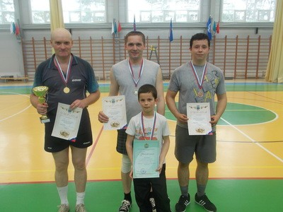
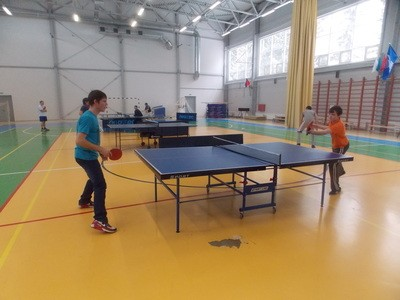
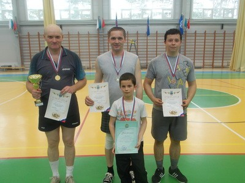
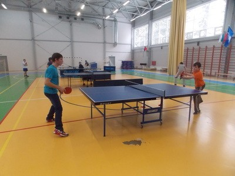

Вместе сделаем Тарусу чище и краше
30 апреля 2013 года в Тарусе состоялся традиционный общегородской субботник, посвященный Празднику Весны и Труда.
На площади Ленина собрались коллективы предприятий и организаций города. В этом году в субботнике приняли участие 16 учреждений, количество участников составило около двухсот человек.
С приветственным словом к собравшимся обратился Глава администрации городского поселения «Город Таруса» Авиль Тимофеевич Демкин, он поздравил всех с праздником труда, призвал помочь навести порядок в любимом городе и раздал маршрутные листы трудовым бригадам.
Экипировка трудовых бригад в этом году подчеркивала важность предстоящего события. В яркие тельняшки и красные косынки были одеты сотрудники Отдела социальной защиты населения, в военной полевой форме на субботник пришли представители Отдела военного комиссариата, но больше всех выделялась команда СКБ КП ИКИ РАН, которая облачилась в белые комбинезоны. Каждый коллектив подготовил речевки и девизы. Настроение у всех было приподнятое, даже накрапывающий дождь не стал помехой.
В этот день удалось сделать очень много. Трудовой десант сумел навести порядок на центральных улицах города и в оврагах, посадить цветы и убрать годами копившийся мусор.
По окончании работы в березовой роще были подведены итоги прошедшего мероприятия, всем командам были вручены почетные грамоты и подарки.
Благодаря усилиям каждого участника субботника в Тарусе стало намного чище. Сегодня был сделан очередной шаг к тому, чтобы наш любимый город стал еще более красивым и комфортным!
Статья - Е.Н. Жарова
Всероссийский турнир по волейболу в Калуге
С 18 по 21 апреля 2013г. в городе Калуге проходил Всероссийский турнир по волейболу среди юношей 1995-1996 г.р. В турнире приняла участие команда Тарусской Детской юношеской спортивной школы под руководством тренера-преподавателя Николаева Алексея Юрьевича. На протяжении всех соревнований команда Тарусского района лидировала и показывала высокий уровень игры, но в последний день потерпела поражение и по итогам соревнований заняла почетное третье место. Это большой успех для нашей команды в таком крупном Всероссийском турнире.


Состав команды МБОУ ДОД ДЮСШ:
- Аржинт Михаил
- Безгубенко Даниил
- Руднев Илья
- Карпачев Сергей
- Шлетков Андрей
- Королюк Денис
- Николаев Никита
- Зенкин Илья
- Майор Егор
Чемпионы России!!
С 18 по 22 апреля 2013г. в городе Старый Оскол прошло Первенство России по ушу, в котором приняли участие спортсмены отделения рукопашного боя Тарусской Детской юношеской спортивной школы Вишкер Дмитрий и Бянкин Иван.
По итогам соревнований Вишкер Дмитрий занял 1 место, а Бянкин Иван – 3 место.
Поздравляем победителей соревнований!
Тарусские спортсмены приняли участие в VII Олимпиаде боевых искусств «Восток-Запад»
С 9 по 14 апреля в Санкт-Петербурге прошла VII открытая Олимпиада боевых искусств «Восток-Запад». В этих престижных соревнованиях приняли участия три спортсмена отделения рукопашного боя Тарусской детской юношеской спортивной школы: Вишкер Дмитрий, Каштанов Владимир, Бянкин Иван.
По итогам соревнований наши спортсмены заняли призовые места:
- Вишкер Дмитрий - 1 место;
- Каштанов Владимир -2 место.
Поздравляем победителей!
«Неделя детской книги» в Тарусской детской библиотеке им. Н.В. Богданова
В этом году, уже в 70-й раз, по всей стране прошел праздник - «Неделя детской книги». Этот праздник родился в 1943 г. – в разгар войны по предложению детского писателя Л.А. Кассиля, который и открыл первую Неделю в Москве. Он дал ей чудесное название – «книжкины именины». Родившись в Москве, «Неделя детской книги» стала проводиться по всей стране. С тех пор, каждый год школьники откладывают свои дела и отправляются в библиотеку на встречу с Книгой.
Все любят праздники. А какой же праздник без игр и веселья? В честь «книжных именин» библиотекари Тарусской детской библиотеки им. Н.В.Богданова подготовили литературно-игровую программу. Учащиеся начальных классов совершили литературное путешествие по книгам писателей С.Михалкова и В.Драгунского. Ребята показали свои знания книг в интеллектуальной игре «Любимые герои», с удовольствием поучаствовали в викторине «Мой вопрос - твой ответ» и играх «Сшибалочка» и «Живой прибор», а также посетили выставку «Проспект непрочитанных книг».


Первенство Тарусского района по настольному теннису на приз главы администрации МР «Тарусский район»
6 апреля 2013 года в спортивном комплексе «Лидер» состоялось личное первенство Тарусского района по настольному теннису на приз главы администрации МР «Тарусский район». В соревнованиях приняли участие 38 человек: 31 мужчина и 7 женщин.
 




Мужчины были разделены на 5 подгрупп. Игры в подгруппах проходили по круговой системе. Из подгруппы в финальную часть вышли по 2 спортсмена.
По результатам игр в подгруппах сильнейшими стали:
- в первой подгруппе - Антипов Кирилл (1 место), Блатиков Никита (2 место);
- во второй подгруппе - Козырев Владимир (1 место), Блатиков Евгений (2 место);
- в третей подгруппе - Дробачев Владимир (1 место), Кошкаров Иван (2 место);
- в четвертой подгруппе - Обыденкин Сергей (1 место), Лысов Валентин (2 место);
- в пятой подгруппе Вещиицкий Сергей (1 место), Колесников Алексей (2 место).
Финальные состязания также проходили по круговой системе. Призовые места распределились следующим образом:
- 1 место – Обыденкин Сергей – не проиграл ни одного матча в этих соревнованиях;
- 2 место — Козырев Владимир – прошлогодний чемпион Тарусского района;
- 3 место — Блатиков Евгений – впервые принявший участие в районных соревнованиях.
Хочется отметить Блатикова Никиту 2001 года рождения, который, несмотря на свой юный возраст, смог достойно противостоять взрослым и опытным соперникам и занял 5 место.
К сожалению, женщин – ценителей настольного тенниса в нашем районе гораздо меньше, чем мужчин — их всего семь. Игры среди женщин также проходили в группе по круговой системе. В упорной борьбе призовые места распределились следующим образом:
- 1 место — Чупрына Наталья;
- 2 место — Козырева Анастасия;
- 3 место — Белоусова Ирина.
Соревнования длились 6 напряженных часов, но спортсмены выдержали это испытание и во время игр проявили стойкость и волю к победе.
Поздравляем всех участников!


{kind=link}
{kind=link}
{kind=link}
{kind=link}
{kind=link}
{kind=link}
{kind=link}
{kind=link}
{kind=link}
{kind=link}
{kind=link}
{kind=link}
{kind=link}
{kind=link}